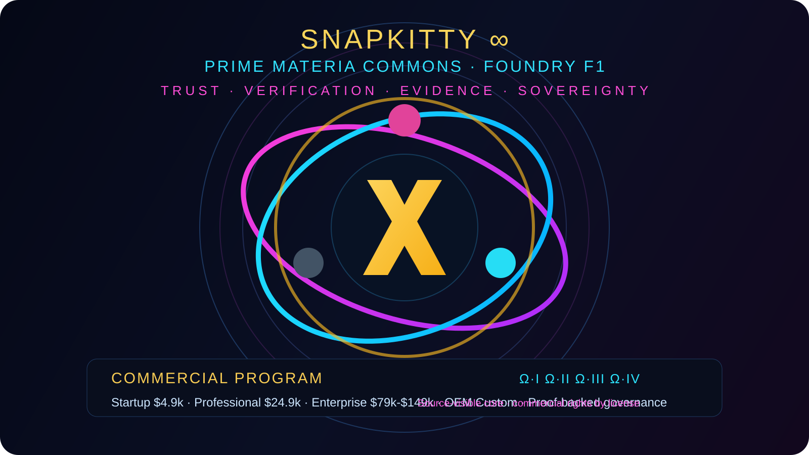

Claim Graph
Turn each major conjecture into a machine-readable dependency graph of theorems, lemmas, assumptions, and attack paths.

Trust-owned theorem factory for decomposing major open problems into formal proof debt, counterexample search, solver queues, and sealed mathematical receipts.
The trust mission is to turn formal proof infrastructure, theorem closure, and counterexample work into a durable mathematical production line. Every closed lemma becomes corpus. Every unresolved step stays visible. Every attempt gets sealed.
Turn each major conjecture into a machine-readable dependency graph of theorems, lemmas, assumptions, and attack paths.
Rank open steps by closability, dependency weight, novelty value, and formalization readiness.
One agent proposes, one formalizes, one attacks, one cites prior art, one packages receipts.
Try to break the statement first with symbolic, numeric, and finite-structure search before sinking proof time into it.
Every closed lemma, benchmark, pipeline, and audit artifact becomes trust-owned mathematical certainty.
Start with adjacent infrastructure. Use the big conjectures to prioritize the graph, not to force premature final claims.
| Program | Immediate Surface | Status | Reason |
|---|---|---|---|
| Riemann Adelic Infrastructure | Friedrichs extension, self-adjointness, spectral operators | Build first | Credible analytic number theory wedge with reusable proof infrastructure. |
| P vs NP Boundary | Complexity formalisms, verifier models, reduction libraries | Long horizon | Needs cleaner formal complexity substrate before top-line claims. |
| Yang-Mills Scaffold | Functional analysis, PDE estimates, measure-theoretic lemmas | Prep layer | Most value comes from formal PDE infrastructure before physics headlines. |
| Navier-Stokes Scaffold | Regularity lemmas, energy estimates, Sobolev toolchain | Prep layer | Formal proof debt in analysis is the real first asset. |
| Existing Trust Wins | OM-001, SKW-001, ALP closures | Closed | Use as proof the system can already close named debts and seal receipts. |
The frontend gives both humans and agents a shared operational map.
Expands the conjecture into a lemma DAG with explicit proof debt and branch points.
Runs finite counterexample search, numeric stress tests, and contradiction probes.
Proposes candidate lemmas, proof sketches, and tactic strategies for the next frontier edge.
Translates surviving claims into Lean / Isabelle / Coq and rejects unverifiable rhetoric.
Seals outcomes to WORM, updates corpus, and classifies assets for trust ownership and licensing.
Single-screen operating surface: problem, formal target, tactic path, and side-band mission context.
program: Riemann Adelic Infrastructure
target: Friedrichs extension of adelic Laplacian
priority: HIGH
reason: reusable infrastructure for analytic number theory
lemma_queue:
- densely_defined_operator
- symmetric_form_closable
- lower_semibounded_form
- existence_of_self_adjoint_extension
- spectral_measure_packaging
counterexample_policy:
- reject false branches early
- search finite truncations first
- numeric stress before formal proof labor
formal_target:
theorem friedrichs_extension_exists :
closable(q) -> semibounded(q) -> ∃ A, selfAdjoint A
receipt_policy:
- every attempt sealed
- no silent theorem drift
- no "close enough" proof language
OM-001 closed by witness construction.
SKW-001 closed by commutative-ring quartic homogeneity proof.
SKW-002 remains open and visible.
Public interface is visible. Certified operational lanes, receipts, and capability-gated assets remain governed by the trust and its licensing structure.
Illustrative operator view of sealed mathematical receipts and mission-state evidence.
{"ts":"2026-07-13T11:18:45Z","id":"OM-001","event":"proof_closed","tactic":"constructor/rintro","status":"CLOSED","receipt":"a812fd02"}
{"ts":"2026-07-13T11:18:45Z","id":"SKW-001","event":"proof_closed","tactic":"ring","status":"CLOSED","receipt":"28832252"}
{"ts":"2026-07-13T11:19:12Z","id":"SKW-002","event":"frontier_open","status":"UNSOLVED","note":"I4 E7 invariance remains open"}
{"ts":"2026-07-13T15:51:00Z","id":"TRUST-IRS-001","event":"trust_record_added","status":"SEALED","note":"CP575B carried into legal docs"}
{"ts":"2026-07-13T16:03:00Z","id":"MISSION-ERIC-001","event":"mission_statement_bound","status":"SEALED","note":"proceeds directed toward Eric Westerhoff mission"}
Shared operating picture for humans and agents. One page to see the mission, the queues, the formal target, and the evidence chain without flattening the math into marketing.